Ótica geométrica
Table of Contents
1 Breve motivação histórica
Os estudos dos raios de luz e de como eles interagem com espelhos foi fundamental para o desenvolvimento de tecnologias como: Telescópios, câmeras, óculos e etc. Um dos desmembramentos dessa tecnologia foi o aumento da capacidade de navegação, já que com lentes era possível ver mais longe e também ver entrelas no céu mais facilmente. A primeira civilação a estudar lentes a fundo foram os gregos, apesar de que os egípios já a utilizam. Os gregos (principalmente Euclides) observavam que um raio luz que incidia sobre uma poça de água e, reflitindo sobre essa superfície por um ângulo, chegava ao seus olhos, fazendo um caminho mínimo. O primeiro povo a realmente levar a fundo a teoria de ótica foram os árabes no final do primeiro milênio, principalmente Alhazen e Avicenna.
2 Ótica geométrica
Na ótica geométrica, utilizamos raios de luz para descrever a luz que chega um ponto à outro. Esses raios de luz não possuem começo nem fim, são apenas uma representação geométrica do trajeto da luz.
Figure 1: Exemplo de luz entre árvores
Como podemos ver na figura acima, podemos pensar que luz se propagar como esses raios de luz. Isso luz leva a entender alguns fenômenos da natureza. Um exemplo é como podemos enxergar, um fato que é fundamental para entender o funcionamento da visão é que os olhos são receptores dos raios de luz. Usando esse fato podemos desenhar uma figura utilizando raios de luz como a de baixo
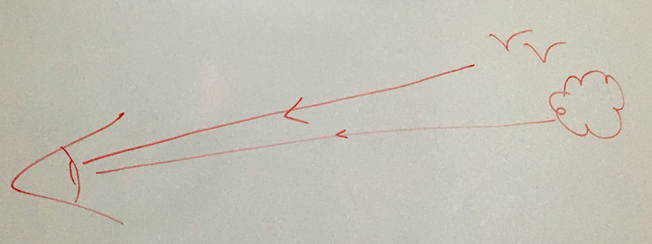
Podemos ver que os raios de luz são projetados em nossos olhos indo de linhas retas à partir dos objetos. Mais detalhes de como o nosso olhos realmente funciona virá mais tarde quando falarmos de lentes. Outro efeito que podemos explicar usando raios de luz é a reflexão. A lei de reflexão diz que um raio de luz incidindo sobre uma superfície plana reflete com o mesmo ângulo de incidência. Na figura seria algo como
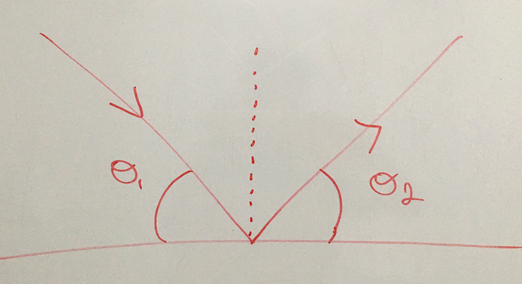
Então imaginamos que estamos olhando para um lago, intuitivamente sabemos que quando a água está calma podemos ver a reflexão do céu na superfície do lago, e isso é explicado pela lei de reflexão da seguinte forma.
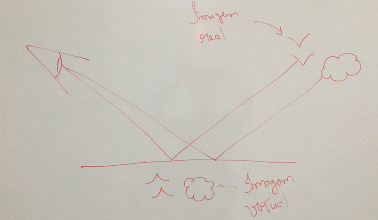
Vemos que a "imagem" que vemos na superfície do lado não é a imagem verdadeia e sim uma imagem projetada na superfície do lado e ela está de cabeça para baixo.
Exercício: Por que a imagem virtual é projetada de cabeça para baixo? Exercício: O que aconteceria se a água estivesse turbulenta e se movendo, ou seja, por que você não consegue ver reflexão em, por exemplo, um rio correndo?
Um terceiro efeito que a ótica geométrica explica são as câmaras escuras, que é o princípio das câmaras fotográficas (e dos seus olhos também!), voltaremos a esse tópico depois.
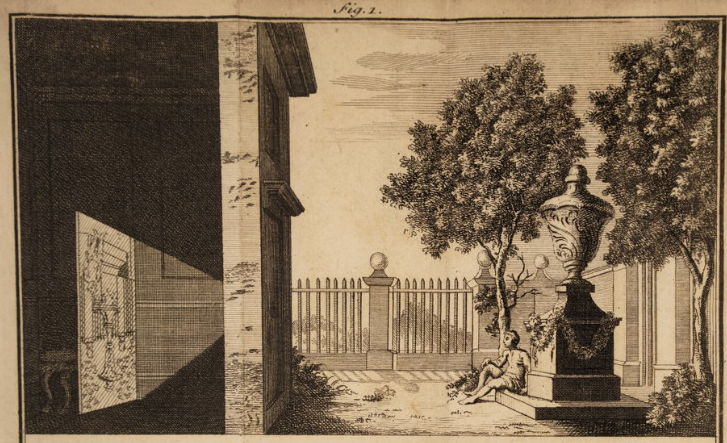
3 Espelhos retos e lei de reflexão
Espelhos foram inventados para tomar vantagem do fato que luz segue raios de luz. Um espelho (perfeito) é uma superfície que reflete toda luz que incide de acordo com a lei de reflexão. É o caso da superfície parada do lago, só que a diferença é que o espelho reflete perfeitamente a luz que incide, já no caso do lado veríamos uma imagem um pouco fraca. A parte simples do espelho plano é que precisamos saber apenas a lei de reflexão para resolver o problema. Vamos supôr que colocamos uma séries de espelhos uns apontando para os outros e queremos saber o que vai acontecer quando mirarmos um laser nele.

Exercício: Você está de frente à um espelho plano, qual é a distância que você deve ficar do espelho para ver os seus pés (H = 1,80m, d = 1,50m)? Dica: Use a lei de reflexão. Ache também o ângulo de reflexão para os dados do problema.

4 Espelhos esféricos
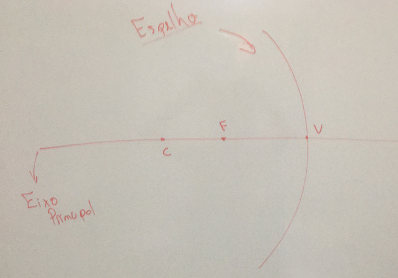
Um espelho esférico é aquele que possui uma curvatura, isto quer dizer que ele é diferente do espelho plano que vimos anteriormente porém algumas partes, como a lei de reflexão, ainda podem ser usadas. Este espelho possui dois "tipos" de curvatura: para dentro, chamado de côncavo, e para fora, chamado convexo. Podemos pensar em espelhos côncavos e convexos somente mudando o ponto de vista por onde olhamos o espelho. Os espelhos esféricos são caracterizados por um eixo central, um ângulo de abertura \(\alpha\), um raio de curvatura \(R\), um centro de curvatura \(C\) e um ponto focal \(F\). Chamamos a distância \(\overline{VF}\) de \(f\) e a distância \(\overline{VC}\) de R, também é o raio do círculo. Para os espelhos esféricos
\begin{align*} \overline{VF} = \frac{\overline{VC}}{2} \quad\to f = \frac{R}{2} \end{align*}Vamos primeiro descrever o espelho esférico côncavo. A característica central deste tipo de espelho é que qualquer raio de luz incidindo paralelo a ele são apontados para o ponto focal. Então este ponto serve como um divisor de águas para o espelho côncavo como veremos mais à frente.
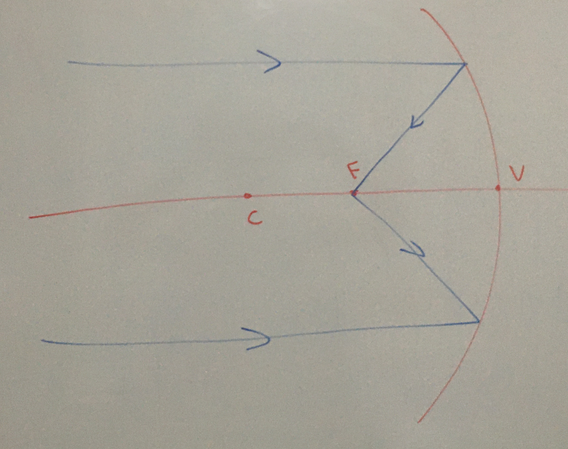
Então, como o ponto focal é aquele onde os raios incidentes são paralelos, os raios não paralelos estarão à frente ou atrás do ponto focal.
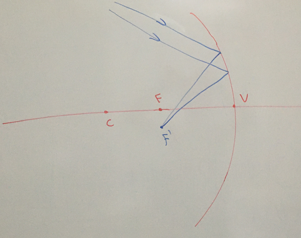
Então o ponto \(F'\) é chamado de ponto focal virtual, pois ele é não o ponto focal original mas é para onde todos os raios de luz com um certo ângulo vão apontar. Temos ainda qualquer raio de luz que incide sobre o vértice \(V\) é reflito de acordo com a lei de reflexão, e todo raio de luz que passa pelo ponto central \(C\) é refletido nele mesmo. Vamos analisar agora o que acontece com reflexão de objetos em relação à sua posição. Suponndo que colocamos um objeto antes do ponto central \(C\). Um raio paralelo partindo deste objeto iria passar pelo focal formando uma imagem conforme a figura
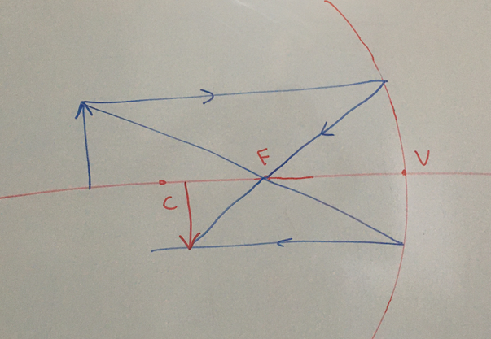
Já um objeto entre os pontos V e F, um raio paralelos iria também passar por pelo ponto focal porém a imagem seria formada da seguinte forma.
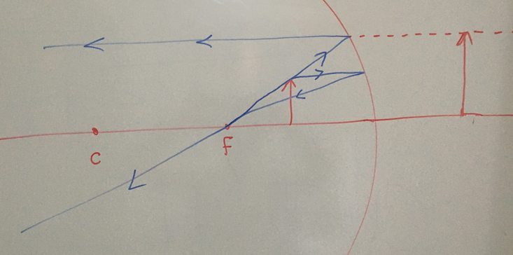
Exercício: Coloque a seta entre os pontos C e F e veja qual será a projeção
Para as lentes convexas podemos usar o mesmo método, como veremos abaixo:
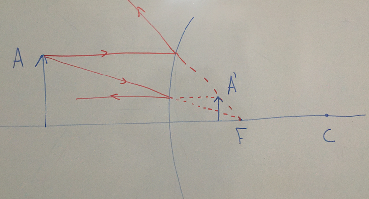
Traçamos primeiro um raio de luz paralelo, que é refletido pelo ponto focal. Depois passamos um raio de luz em direção ao ponto focal, que é refletido em paralelo. Assim podemos ver ondas as duas linhas se conectam, que é onde a projeção da imagem sera feita. Para as lentes convexas então sempre temos uma imagem virtual, menor e normal.
É verdade que os objetos formados antes do ponto focal \(F\) formam imagens virtuais, já o pontos após o ponto focal \(F\) formam imagens reais. Esta relação entre a abscissa do objeto sendo observado, sua imagem e o ponto focal é dado pela equação da Gauss:
\begin{align} \frac{1}{f} = \frac{1}{p} + \frac{1}{p'} \end{align}Podemos observar, como nos exemplo anterior que se: \(f > p\) então \(\frac{1}{f} < \frac{1}{p}\) e
\begin{align*} \frac{1}{f} - \frac{1}{p} < 0 \end{align*}ou seja \(p' > 0\). Isto quer dizer que a imagem virtual do objeto é positiva, ou seja ela está na parte de dentro do espelho e a imagem projetada vai ser virtual. Da mesma forma se \(p > f\) então \(\frac{1}{p} < \frac{1}{f}\) e
\begin{align} \frac{1}{p} - \frac{1}{f} < 0 \end{align}ou seja a \(p' < 0\), então a imagem virtual é negativa e a imagem projetada é real.
5 Lei da difração (refração)
A luz quando passa de um meio para outro ele muda de direção. Isto pode ser observado quando olhamos para dentro de uma piscina ou um lago. O que vemos é o seguinte:
/2020-06-29_14-52-15_screenshot.png) Quando olhamos para um objeto dentro da água, na verdade não estamos olhando para uma linha reta até o objeto. A água faz com que a luz se curve um pouco para dentro, assim, para ver um o objeto, temos que olhar um pouco para cima dele. Isto ocorre por que a luz quer tomar o caminho mais curto entre um ponto e outro, e como a água tem mais "coisa" nela que o ar, a luz tem que mudar um pouco a trajetória para corrigir o caminho mais curto. O motivo é que quanto mais "coisa", ou seja, quanto mais denso o material, mais devagar a luz se propaga dentro deste material. Esse "correção" de curso é dada pelo índice de refração do meio. Dizemos que cada meio (ar, água, vidro, etc..) possui um índice de refração que diz o quanto a luz se curva ao passar por ele.
Quando olhamos para um objeto dentro da água, na verdade não estamos olhando para uma linha reta até o objeto. A água faz com que a luz se curve um pouco para dentro, assim, para ver um o objeto, temos que olhar um pouco para cima dele. Isto ocorre por que a luz quer tomar o caminho mais curto entre um ponto e outro, e como a água tem mais "coisa" nela que o ar, a luz tem que mudar um pouco a trajetória para corrigir o caminho mais curto. O motivo é que quanto mais "coisa", ou seja, quanto mais denso o material, mais devagar a luz se propaga dentro deste material. Esse "correção" de curso é dada pelo índice de refração do meio. Dizemos que cada meio (ar, água, vidro, etc..) possui um índice de refração que diz o quanto a luz se curva ao passar por ele.
Mas como podemos achar o índice refração na prática? Como foi dito anteriormente, o O índice de refração do meio é obtido a partir da velocidade de luz no vácuo e a velocidade de refração no meio. Sabemos que a velocidade na luz no vácuo é constante
\begin{align*} c = 300.000 \thinspace\frac{km}{s} \end{align*}E a velocidade da luz no meio depende de quão denso é esse meio. O conceito de densidade é muito importante para termos intuição sobre este fenômenos. Por exemplo, sabemos que a água é mais densa que o ar mas o que isso quer dizer? Dizemos que um material é mais denso que o outro se compararmos as massas dos mesmos volumes destes materials
Exemplo: Qual é mais pesado, um metro cúbico de água ou um metro cúbido de areia? Areia, então areia é mais densa que a água.
Temos então que o índice refração é dado por
\begin{align} n = \frac{c}{v_{meio}} \end{align}O índice de refração também é relacionado com o ângulo com que a luz faz ao passar de um meio à outro. Esta relação é chamada Lei de Snell-Descartes.
\begin{align} n_1 \sin \theta_1 = n_2 \sin \theta_2 \end{align}Vamos então isolar \(\sin \theta_2\) na equação anterior
\begin{align*} \sin \theta_2 = \frac{n_1}{n_2} \sin \theta_1 \end{align*}O que acontece se \(n_1 > n_2\), por exemplo \(n_1 = 0.8\) e \(n_2 = 0.2\)? Temos que \(\frac{n_1}{n_2} = 4\) e então
\begin{align*} \sin \theta_2 = 4 \sin \theta_1 \end{align*}Isto quer dizer que o ângulo que sai é maior que o ângulo que entrou. Ou seja, nesse caso a refração fez com que o ângulo ficasse mais aberto. No outro case quando temos \(n_2 > n_1\), por exemplo \(n_1 = 0.5\) e \(n_2 = 0.7\) temos \(\frac{n_1}{n_2} = 0.71\) e então
\begin{align*} \sin \theta_2 = 0.71 \sin \theta_1 \end{align*}Então o o ângulo que sai é menor que o ângulo que entrou. A refração fez com que os ângulo ficasse mais fechado.
Exercício: No exemplo de cima da água, a partir do desenho, você diria que \(n_1 > n_2\) ou \(n_2 > n_1\)?
6 Lentes — Lâminas de faces paralelas
O exemplo mais simples de uma lente podemos obter usando uma lâmina de faces paralelas, como na figura abaixo
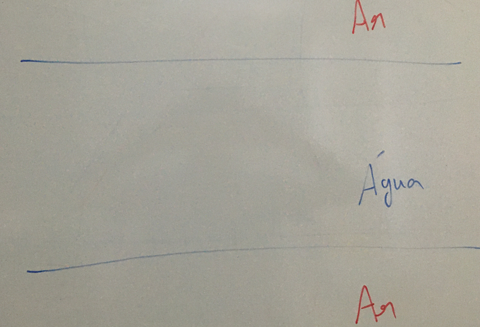 Vamos dizer que \(n_{ar}=1\) e \(n_{agua}=\frac{4}{3}\), então vamos estudar o que acontece quando a luz passar por esse objeto. Primeiro temos que quando o a luz vai do ar para a água
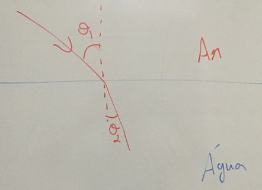
Em seguida o raio de luz vai da água de volta ao ar
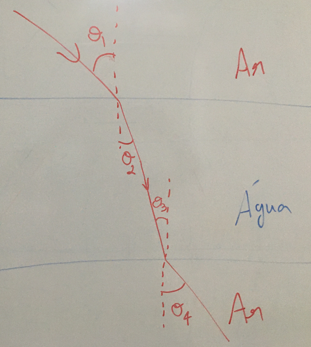
O que podemos analisar é que \(\theta_1 = \theta_4\) e \(\theta_2 = \theta_3\), ou seja, os ângulos que entram e saem são os mesmo! Para ver como podemos usar isto como a lente vamos olhar a imagem a seguir:

Se não tivéssemos a água o trajeto seguido pela água seria o azul, vemos claramente que este raio de luz iria errar o nossos olhos e não veríamos a o pássaro voando. O trajeto passando pela lâmina de água em vermelho corrige o trajeto da luz de forma que conseguimos ver o pássaro voando.
7 Lentes esféricas
O que vimos na seção anterior é que colocando um material com um índice de refração diferente do ar altera o trajeto da luz, e podemos utilizar este fenômeno como uma lente. O exemplo anterior era particularmente simples pois lâmina era plana, seu efeito era somente mudar a trajetória do objeto sem alterar o seu formato. O que ocorre com lentes esféricas é que podemos utilizá-las para tanto mudar a trajetória da luz tanto como alterar o formato das imagens sendo projetadas.
Vimos na seção de espelhos esféricos que dependendo de onde colocamos o nosso objeto em relação ao foco \(F\) e ao centro \(C\) alteramos propriedades da imagem formada, como seu tamanho, invertida ou não e etc. Existem muitos tipos de lentes, mas precisamos apenas dois tipo de lentes esféricas para entender seus comportamentos
Vamos olhar primeiro para a lente plano-convexa, primeiro quando a lente é feita de um material mais denso que o ambiente
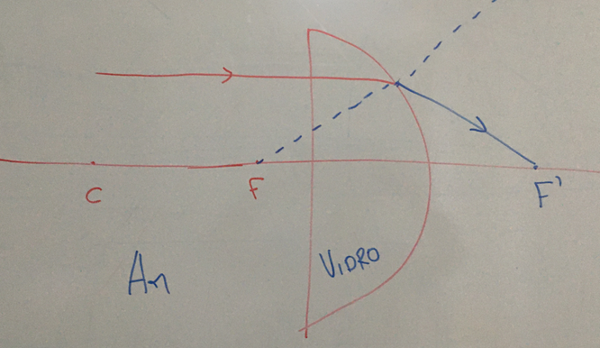
Vemos que, como o raio de luz incide paralelalmente, não sofre refração. Vemos que a parte esférica é bastante diferente do caso do espelho esféricos. O motivo é refração: lembramos que como o vidro é mais denso que o ar, então o ângulo saindo é menor que o ângulo entrando, isto faz com que a lente seja convergente. Conforme a figura, vemos que a luz em paralelo converge para um ponto \(F'\) que é diferente do ponto focal \(F\). No caso que a lente é feita de um material menos denso que o ar temos a seguinte situação
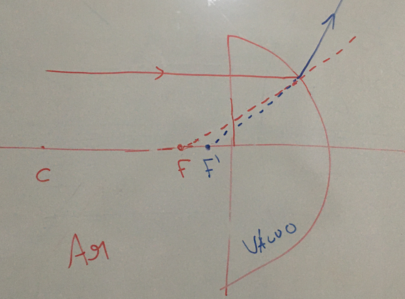
Agora então esta lente é divergente, pois a lei de refração diz que o ângulo que sai será maior que o ângulo incidente. Como podemos verificar na figura, o raio de luz é difratado a partir do ponto \(F'\), que agora está do lado esquerdo e é chamado de virtual.
O outro caso simples é a lente plano-côncava. No caso onde a lente é feita de um material mais denso que o ar temos o seguinte
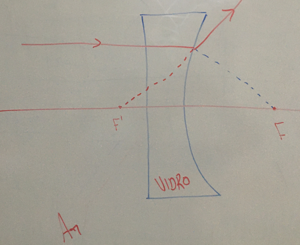
Vemos que o raio de luz incidindo paralelamente é refratado seguindo o ponto \(F'\), que é virtual, e que a lente é divergente. No caso em que a lente é feita de um material menos denso que o o ar temos o oposto como veremos a seguir
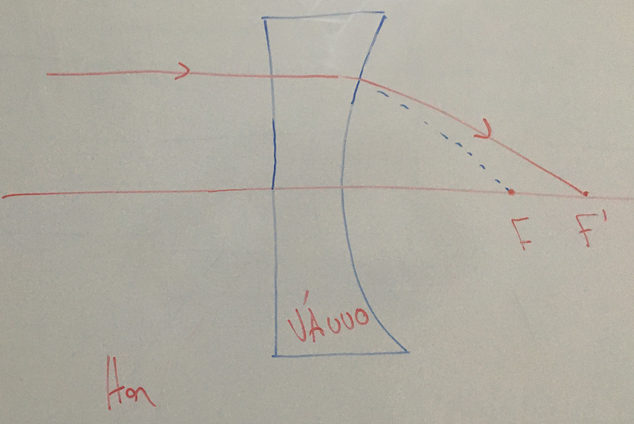
Então o raio de luz incidindo paralelamente converge para o ponto \(F'\), que é real. Então a lente é convergente. Podemos contruir as demais lentes esférias, como a biconvexa e bicôncava a partir destas duas.